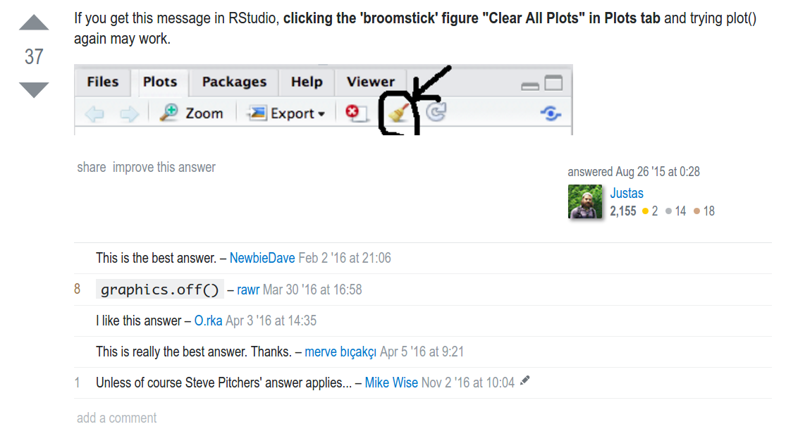
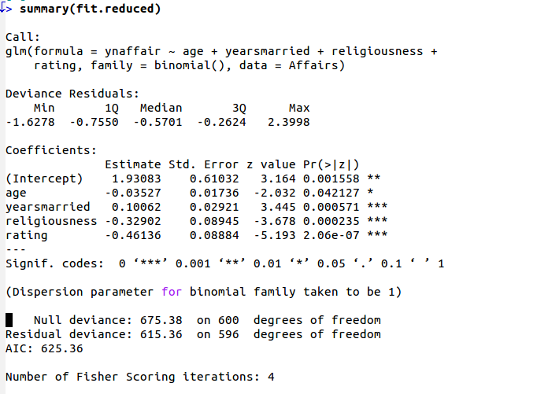
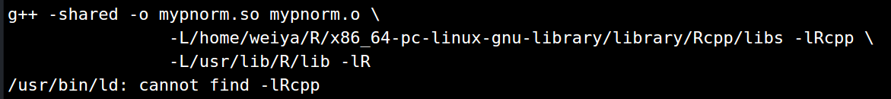
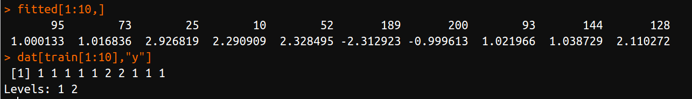

R 相关笔记¶
序列减去常数¶
for (i in c(1:n-1)) print(i) ##0 ##1 ##2 for (i in c(1:(n-1))) print(i) ##1 ##2
Rstudio 清空历史图象¶
Error in plot.new() : figure margins too large in R

linux 下更新 R¶
参考https://mirrors.tuna.tsinghua.edu.cn/CRAN/ 中的README.md文件
若已经通过源码安装，则可以通过找到源码文件夹，使用sudo make uninstall进行卸载。
然后通过配置source.list，进行安装。
终端执行R code¶
参考run-r-script-from-command-line
touch main.R vi main.R ### in main.R ##!/usr/bin/env Rscript ... ## R command ### save main.R ### run this file ./main.R
shiny¶
删除当前工作区所有变量¶
rm(list = ls(all = TRUE))
interval¶
http://blog.sciencenet.cn/blog-54276-288414.html
window 安装包¶
切换到R的安装路径下，在etc文件夹中编辑文件Rprofile.site文件
## set a CRAN mirror local({r <- getOption("repos") r["CRAN"] <- "http://mirrors.ustc.edu.cn/CRAN/" options(repos=r)})
sort(), rank(), order()¶
http://blog.sina.com.cn/s/blog_6caea8bf0100spe9.html
sort(x)是对向量x进行排序，返回值排序后的数值向量。rank()是求秩的函数，它的返回值是这个向量中对应元素的“排名”。而order()的返回值是对应“排名”的元素所在向量中的位置。

Interpreting Residual and Null Deviance in GLM R¶

Refer to https://stats.stackexchange.com/questions/108995/interpreting-residual-and-null-deviance-in-glm-r
缺少libRblas.so和libRlapack.so的解决办法¶

虽然缺少libRblas.so和libRlapack.so，但却有libblas.so和liblapack.so，而它们应该是一样的，只是文件名不同而已，为此添加链接即可。
cd /usr/lib
ln -s libblas.so libRblas.so
ln -s /usr/lib/R/module/lapack.so libRlapack.so
参考： 1. https://bugs.launchpad.net/ubuntu/+source/rkward/+bug/264436 2. http://promberger.info/linux/2009/03/20/r-lme4-matrix-not-finding-librlapackso/
RSQLite¶
参考博文https://statr.me/2011/10/large-regression/
代码见sqlite_ex.R
Rcpp¶

手动设置
cd /usr/local lib ##cd /usr/lib ln -s /home/weiya/R/x86_64-pc-linux-gnu-library/library/Rcpp/libs/Rcpp.so libRcpp.so
function ‘dataptr’ not provided by package ‘Rcpp’¶
原因是因为没有在
dyn.load()
前面添加
library(Rcpp) ## 或require(Rcpp)
R check package about description¶
check locale
par cheatsheet¶
r-graphical-parameters-cheatsheet
Mathematical Annotation in R plot¶
plot(..., main = expression(paste("...", mu[1])))
参考 1. Mathematical Annotation in R
Problems installing the devtools package¶
function ‘dataptr’ not provided by package ‘Rcpp’¶
参考function ‘dataptr’ not provided by package ‘Rcpp’
Rcpp reference¶
remove outliers from the boxplot¶
How to remove outliers from a dataset
rmarkdown转化中文字符为PDF的设置¶
--- title: "test" author: "weiya" output: pdf_document: latex_engine: xelatex includes: in_header: header.tex ---
在grid排列图¶
x11 font cannot be loaded¶
参考X11 font -adobe-helvetica-%s-%s---%d-------*, face 2 at size 11 could not be loaded
安装多版本R¶
Installing multiple versions of R
semi-transparency is not supported on this device¶
semi-transparency is not supported on this device
MC, MCMC, Gibbs采样 原理¶
随机采样方法整理与讲解（MCMC、Gibbs Sampling等）
Running R in batch mode on Linux¶
Running R in batch mode on Linux
RStudio: Warning message: Setting LC_CTYPE failed, using “C” 浅析¶
RStudio: Warning message: Setting LC_CTYPE failed, using “C” 浅析
“Kernel density estimation” is a convolution of what?¶
“Kernel density estimation” is a convolution of what?
unable to start rstudio in centos getting error “unable to connect to service”¶
unable to start rstudio in centos getting error “unable to connect to service”
发布R包¶
Presentations with Slidy¶
Estimation of the expected prediction error¶
Estimation of the expected prediction error
协方差矩阵的几何解释¶
ROCR包中prediction函数¶
prediction定义如下
prediction(predictions, labels, label.ordering = NULL)
在绘制ROC曲线时，必要时需要指定label.ordering中negative和positive，否则结果会完全相反。举个例子
## generate some data with a non-linar class boundary set.seed(123) x = matrix(rnorm(200*2), ncol = 2) x[1:100, ] = x[1:100, ] + 2 x[101:150, ] = x[101:150, ] - 2 y = c(rep(1, 150), rep(2, 50)) dat = data.frame(x = x, y = as.factor(y)) plot(x, col = y) ## randomly split into training and testing groups train = sample(200, 100) ## training data using radial kernel svmfit = svm(y~., data = dat[train, ], kernel = "radial", cost = 1) plot(svmfit, dat[train, ]) ## cross-validation set.seed(123) tune.out = tune(svm, y~., data = dat[train, ], kernel = "radial", ranges = list(cost = c(0.1, 1, 10, 100, 1000), gamma = c(0.5, 1, 2, 3, 4))) summary(tune.out) ## prediction table(true = dat[-train, "y"], pred = predict(tune.out$best.model, newdata = dat[-train, ])) ## ROC curves library(ROCR) rocplot = function ( pred , truth , ...) { predob = prediction ( pred, truth , label.ordering = c("2", "1")) perf = performance ( predob , "tpr" , "fpr") plot ( perf,...) } svmfit.opt = svm(y~., data = dat[train, ], kernel = "radial", gamma = 3, cost = 10, decision.values = T) fitted = attributes(predict(svmfit.opt, dat[train, ], decision.values = T))$decision.values rocplot ( fitted , dat [ train ,"y"] , main ="Training Data")
对于上述代码，如果不指定label.ordering = c("2", "1")，则得到的ROC曲线如下图

原因是因为fitted与y大小关系相反，即前者大时后者小，而前者小时后者大。

pairs中自定义panel函数¶
问题来自R语言绘图？ - 知乎
my.lower <- function(x,y,...){ points(x, y) lines(lowess(x, y), col = "red", lwd=2) } my.upper <- function(x, y, ...){ cor.val = round(cor(x,y), digits = 3) if (abs(cor.val) > 0.5){ text(mean(x), mean(y), cor.val, cex = 3) text(sort(x)[length(x)*0.8], max(y), '***', cex = 4, col = "red") } else { text(mean(x), mean(y), cor.val, cex = 1) } } pairs(iris[1:4], lower.panel =my.lower, upper.panel = my.upper)
参考网址： 1. Different data in upper and lower panel of scatterplot matrix
神奇的[¶
比如
A = array(sample(0:255, 100*100*3, replace = T), dim = c(100,100,3)) B = array(sample(1:100, 2*5), dim = c(2,5)) apply(A, 3, `[`, t(B))
proxy 代理¶
参考
lm() 中有无 I() 的差异¶
注意
lm(Y ~ X + X^2)
和
lm(Y ~ X + I(X^2))
是不一样的。若要表示多项式回归，则应该用 I(X^2)。
多项式作图¶
参考Plot polynomial regression curve in R
custom print¶
class(obj) = "example" print.example <- function(x) { }
refer to Example Needed: Change the default print method of an object
write lines to file¶
fileConn<-file("output.txt") writeLines(c("Hello","World"), fileConn) close(fileConn)
refer to Write lines of text to a file in R
combine base and ggplot graphics in R figure¶
refer to Combine base and ggplot graphics in R figure window
specify CRAN mirror in install.package¶
r <- getOption("repos") r["CRAN"] <- "https://cran.r-project.org" options(repos=r)
we also can wrap it with local({...}) and save in ~/.Rprofile.
Refer to How to select a CRAN mirror in R
R 符号运算¶
参考 R 语言做符号计算。
NormDensity <- expression(1 / sqrt(2 * pi) * exp(-x^2 / 2)) D(NormDensity, "x") DD <- function(expr, name, order = 1) { if (order < 1) stop("'order' must be >= 1") if (order == 1) D(expr, name) else DD(D(expr, name), name, order - 1) } DD(NormDensity, "x", 3) DFun <- deriv(NormDensity, "x", function.arg = TRUE) DFun(1)
Show all R’s shortcuts¶
Alt-Shift-K.
Mistake with colon operator¶
vec <- c() for (i in 1:length(vec)) print(vec[i])
would print two NULL because 1:length(vec) would be c(1,0). A method to avoid this
for (i in seq_along(vec)) print(vec[i])